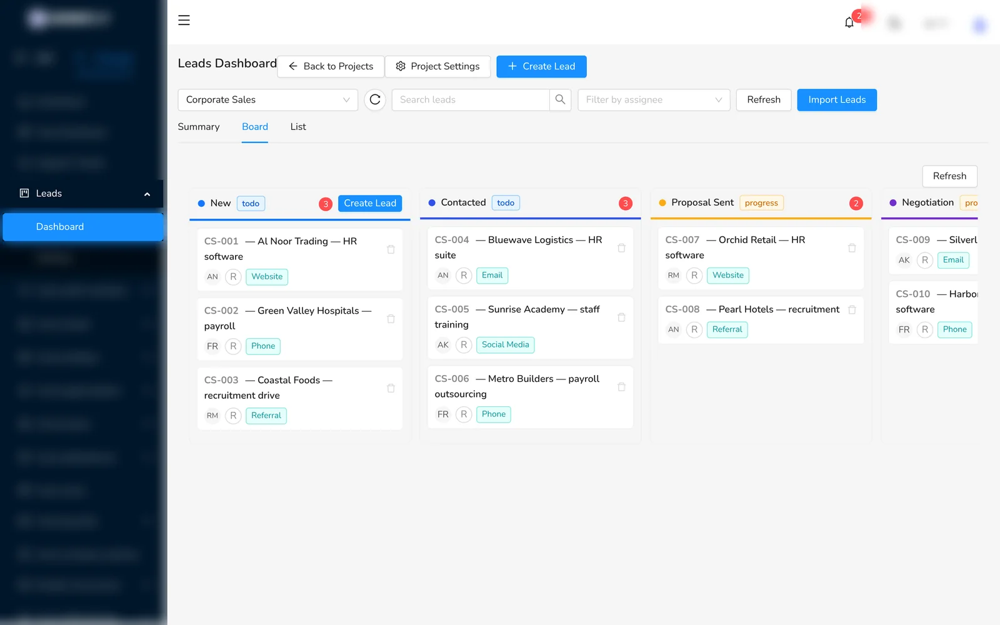

Module 01 · Sales
Lead management CRM
Every enquiry captured, assigned and followed up, so no lead is lost and managers can see the whole pipeline at a glance.
- Separate pipelines for each business line, each with its own stages, set up from reusable templates
- Kanban board and list views, with filters by stage, owner, source, dates and any custom field
- Custom fields per pipeline (text, number, date, phone, email, choices), with duplicate-lead protection
- Bulk import from Excel, plus remarks, activity history and @mentions on every lead
- Reports on lead flow by stage, source and team member
Result: one pipeline view for managers and a clear "my leads" view for every salesperson.
